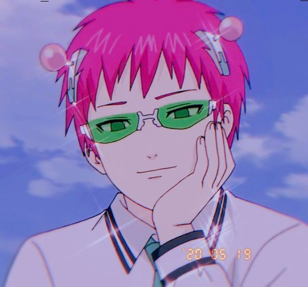
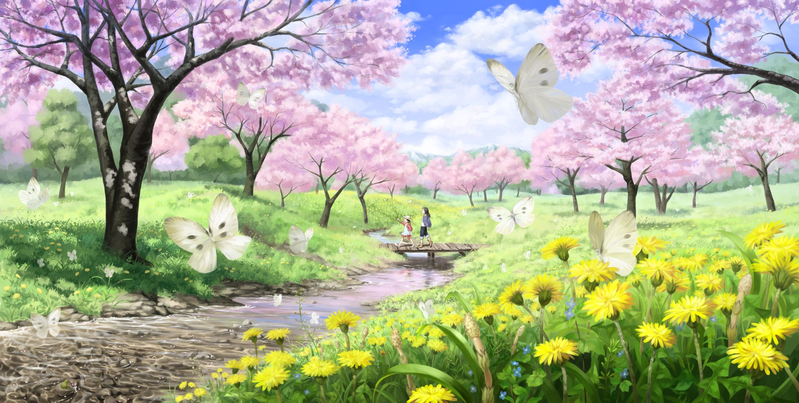

Challenges
Our challenge for lab eleven is to create the index.html and further enhance the style of our html by experimenting with block level styling in css. We are also challenged to add content coding, links, and a side bar with a paragraph of random facts about myself. My partner and I are to help and guide each other so that we can succeed in this lab.
Difficulties
There were difficulties regarding the aside, the sidebar, and the image placement as well. I was strugguling with the aside because it was showing up either outside of my main border or it was overlapping the purple border that I made around the main blue border. By moving the aside above all my main text, it was able to be inside the main blue border which is great. I was also having issues with the sidebar and adding links to it but with the help of my partner and w3schools, I was able to figure it out. I also had difficulties with the images because I wanted to have one image on the left and another image in the right but I figured that out by myself which is just adding the class info to a specific image. Overall, I was able to fix my errors and difficulties with ease.
Results
The results for this webpage came out well and organized. I decided to go back and use this theme agaiin because it is not as distracting as the others that I created. I also really like how I created this one which is another reason why I used this theme again. The sidebar looks a bit awkward because its only a few links but that is okay and my side bar looks pretty well and I am happy how it came out. In conclusion, I am satisfied with the look of this webpage.